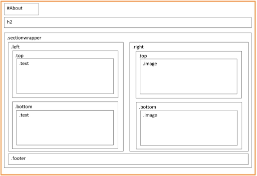
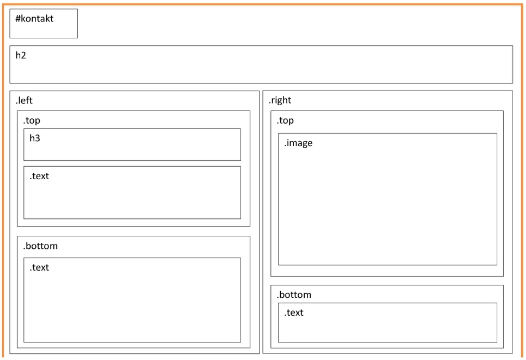
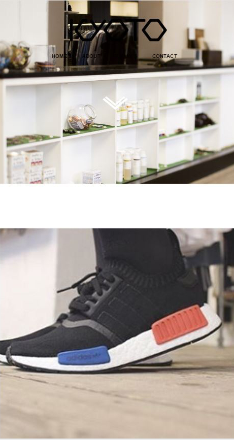
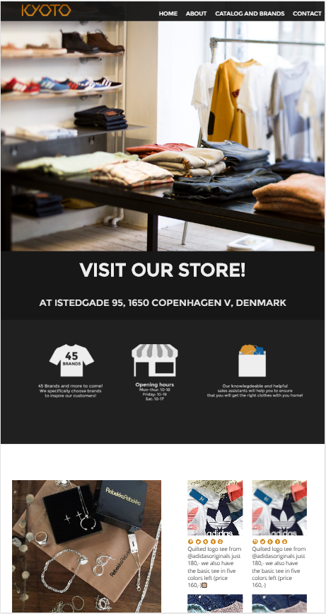

Tema 1 - Basic web: Redesign – Kyoto
Formålet: Redesign af selvvalgt virksomhed
Opgave: “I skal vælge én af de fire case virksomheder og redesigne deres webside. Jeres løsning skal være responsiv og indeholde de informationer som allerede findes på siden , men må gerne være helt nyt i forhold til design og organisering af informationerne. Jeres løsning skal tage udgangspunkt i en analyse af det eksisterende site samt en test af websiden. Projektet skal ligeledes afsluttes med en test af jeres redesignede website.”
Valg af hjemmeside
Vi skulle i grupper á 4 mand vælge en hjemmeside som skulle redesignes. Vi besluttede at vælge kyoto da dens design ikke er særligt gennemtænk og vi troede vi kunne lave gode forandringer. Man kunne ikke se menuerne pga. splashbilledet forskellige “farver”. overordnet var hjemmesiden UX dårlig og ikke særlig inspirerende eller spændende.
I vores proces skulle vi komme ind på følgende ting:
- Analyse af eksisterende hjemmeside
- Persona
- idegenerering
- wireframes
- styletile
- layoutdiagrammer
- En test af vores hjemmesiden
- justeringer til hjemmesiden
- Rapport
Wireframes

Layoutdiagram
Home

About
Contact
Brands & Catalog
Inden Redesign
Efter Redesign
Beskrievelse af redesignet
Vores kommunikative fremstående på websitet er minimalistisk, relevantog kortfattet. Vi prøver samt at arbejde med vores intention med at få dem ned i butikken og følge dem på de sociale medier og at man kan se hvad for noget tøj de i butikken har. Vi har arbejdet meget med at vi skal have det samme layout der skal køre ens over de diverse sider for at skabe en decideret rød tråd, som man kan se på hjemmesiden og vores styleguide. Samt skabt kyoto en identitetsfarve, da vi syntes at det faldt igennem og at man ikke kunne se på forsiden at det rigtigt var en tøj butik. Det er derfor vi har tøjet i fokus på forsiden Med kompositionen har vi arbejdet meget med deres sociale medier opslag ikke fylder det hele, men at vi har gjort at der er fremhævet et opslag også kan man se de seneste 4 opslag. Samt er det opstillet på en symmetrisk måde, hvilket går igennem hele websitet.
Link til website - koden er "kea" i begge felter
Link til rapport